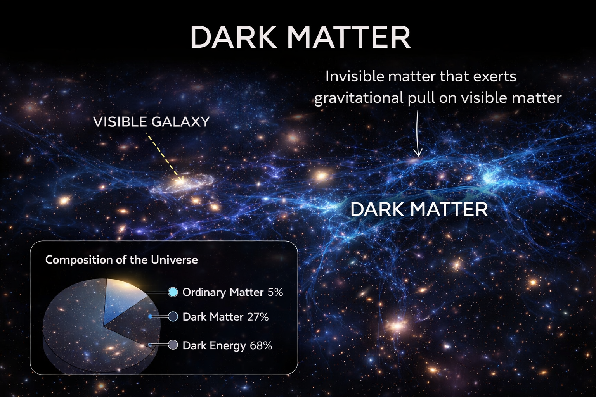
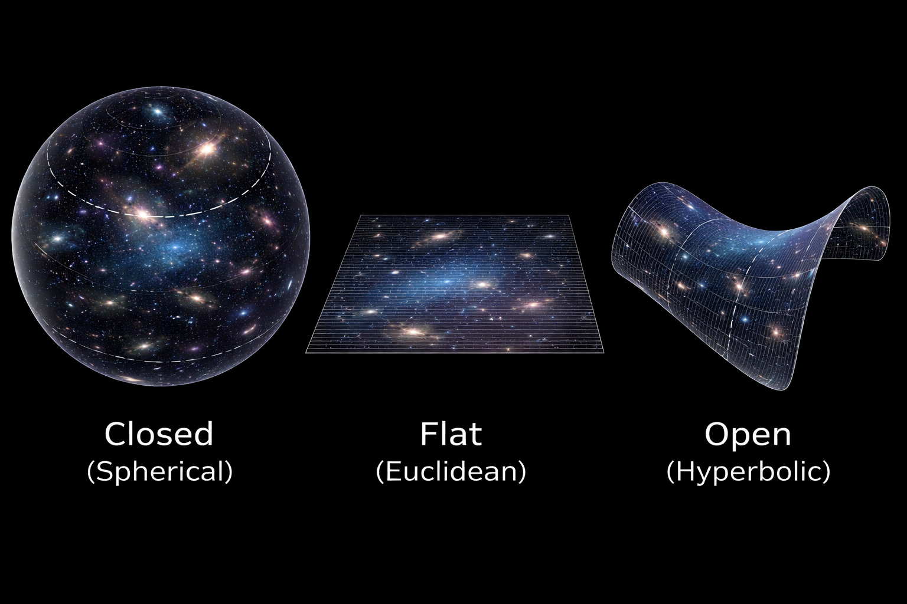

Cosmology seeks to answer fundamental questions: What is the universe? How did it begin? What is it made of? What is its overall structure? Unlike other scientific disciplines, cosmology studies a single system — the universe itself — without the possibility of experimental replication.
Its conclusions rely on observation, mathematical modeling, and the laws of physics.
The universe is defined as the totality of space, time, matter, energy, and the physical laws governing them.
It includes galaxies, stars, planets, radiation, dark matter, dark energy, and the structure of spacetime itself.
Observations in the 1920s by Edwin Hubble demonstrated that distant galaxies are moving away from Earth, implying that the universe is expanding.
This discovery led to the development of the Big Bang model, which proposes that the universe began approximately 13.8 billion years ago from a hot, dense state and has been expanding ever since.
Precision measurements, including those from the Planck satellite, indicate that the universe consists of:
Ordinary matter includes atoms forming stars, planets, and living organisms.
Dark matter does not emit or absorb light but exerts gravitational influence, helping bind galaxies together.
Dark energy is a mysterious component believed to drive the accelerated expansion of the universe.
The predominance of dark components demonstrates that most of the universe remains invisible and not fully understood.

The chemical composition of the universe is dominated by hydrogen and helium.
These light elements were formed during Big Bang nucleosynthesis, which occurred within the first few minutes after the Big Bang.
Heavier elements such as carbon, oxygen, iron, and gold were synthesized later inside stars through nuclear fusion.
Massive stars eventually exploded as supernovae, dispersing these elements into space.
Subsequent generations of stars and planetary systems formed from this enriched material.
Thus, all known life is composed of elements forged in stellar interiors, linking cosmology directly to chemistry and biology.
One of cosmology’s central questions concerns the geometry of space on large scales.
The universe may have one of three possible spatial geometries:
Observational evidence from cosmic microwave background measurements suggests that the universe is very close to spatially flat.
In a flat universe, parallel lines remain parallel, and the angles of large triangles sum to 180 degrees.
The geometry of the universe is closely connected to its total energy density. Current data indicate that the energy density is near the critical value required for flatness.

Cosmology has evolved into a quantitative science capable of measuring the age, composition, and geometry of the universe with remarkable precision.
The universe is expanding, largely composed of dark matter and dark energy, chemically dominated by hydrogen and helium, and spatially close to flat.
Despite these advances, major questions remain unresolved, including the true nature of dark matter and dark energy.
Future observations and theoretical developments may further refine our understanding of cosmic evolution and structure.
Cosmology remains one of the most profound scientific endeavors, as it seeks to understand the largest system that exists — the universe itself.